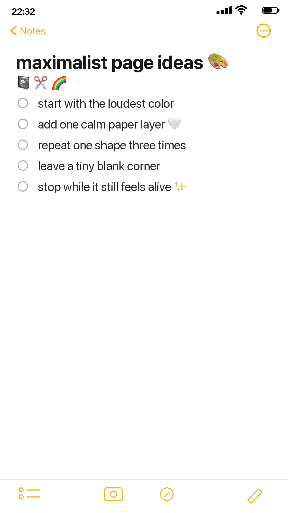

A maximalist page does not have to become visual noise. The trick is to choose one loud thing first, then give it two quieter friends.


Start with the loudest color
Pick the page with the strongest color and let it decide the spread. Do not fight it. Let the rest of the page answer.

Add one calm layer
A cream scrap, a plain envelope, or a torn ledger edge gives the eye somewhere to land.
Repeat one shape
Use the same circle, stamp, rose, ticket, or label shape three times. Repetition makes maximalism look intentional.